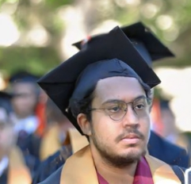

Summary
Aiming to become a front end web developer and further in line to try and pursue machine learning using large language models such as open AI
Education
-
Bachelor of Science in Computer Engineering
-
Purdue University
Work Experience
-
GLASS
-
Financial Officer
-
Managed budget
-
Finalized team purchases
-
Requested grants
-
Senior Design Member
-
Created a bluetooth keypad
-
Assisting children with mobility difficulties to access various gestures (swiping/scrolling on tablet, youtube playback, sound alert)
-
Utilized android development, bluetooth technology, FLIC buttons
Skills
-
Programming Languages: C++, C, Python, SystemVerilog
-
Software & Tools: Microsoft Excel, MATLAB, microcontrollers, PyTorch, Android Studio
-
Technologies: Cybersecurity, ASIC design, computer graphics, artificial intelligence, Bluetooth connectivity
Certification
Soon Come